graphics
什么是图形学
计算机图形学(Computer Graphics，简称CG)是一种使用数学算法将二维或三维图形转化为计算机显示器的栅格形式的科学（百度百科）。包括建模(Modeling)、渲染(Rendering)、动画(Animation)和人机交互(Human–computer Interaction, HCI)等主要领域。
渲染管线（Graphics （Real-time Rendering） Pipeline）
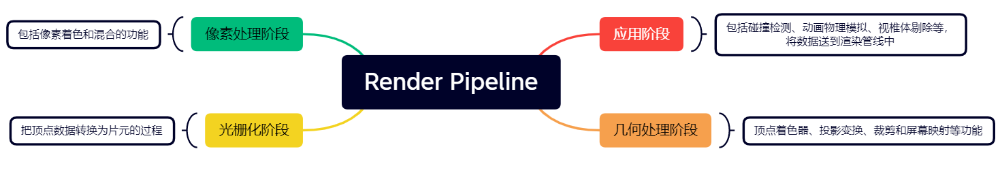
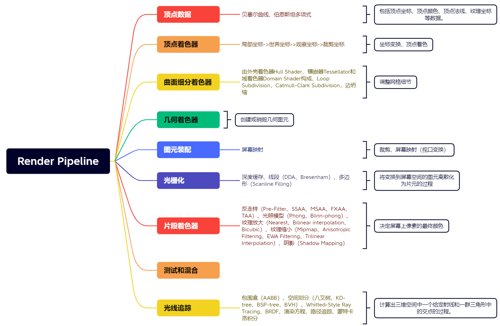
数学基础
线性代数
向量
定义
指具有大小（magnitude）和方向的量。
表示
- 代数表示，a粗体或a上面加箭头
- 几何表示，有向线段
- 坐标表示，直角坐标系中，取各坐标轴方向相同的单位向量为基底
- 矩阵表示
用法
- 确定终点和起点就能确定向量
- 向量的长度，用于求单位向量
- 加法和减法，运用平行四边形法则和三角形法则，在直角坐标系中相当于坐标直接相加
- 点乘，a . b = ||a|| ||b||cosθ = xa * xb + ya * yb ….，||a投影|| = ||a||cosθ，用于求向量间的夹角、a在b上的投影、a分解成沿b和垂直b的向量、计算两个向量是否接近。
- 叉乘，a X b = - b X a，||a X b|| = ||a|| ||b|| sinθ，得到垂直于a、b方向的向量，右手系或左手系，用于判断左右（a X b为正，a在b右）和内外（AP X AB、AP X BC、 AP X CA 的正负相同）。
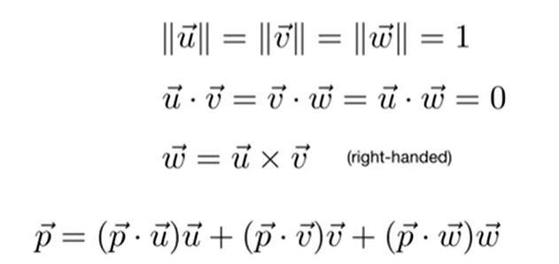
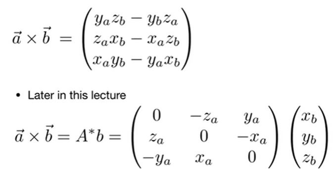
矩阵
定义
矩阵（Matrix）是一个按照长方阵列排列的复数或实数集合，n X m。
用法
- 数乘，矩阵内每个数同时乘x
- 矩阵的乘积，（M X N）（N X P） = （M X P），列数和行数必须相等，结果矩阵的（i，j）就等于矩阵a的i行和矩阵b的j列的点乘。
- 矩阵转置，行变成列，列变成行，（AB）T = BTAT，a . b = aTb
- 单位矩阵（对角全为1的矩阵）和矩阵的逆，AA-1 = A-1A = I，（AB）-1 = B-1A-1
概率论
随机变量
可能取很多值的变量
概率分布
取某些值的概率
期望
每一个值乘概率的和，E(x) = p(x)f(x)的积分
概率密度函数
probability density function，面积 = 概率
蒙特卡罗积分
Monte Carlo Integration，求定积分，采样求平均。
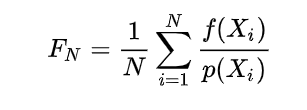
几何（Geometry）
渲染管线处理的多边形，一是来源于一开始传入的顶点数据，二是来源于后期处理
表示方法
Implicit Representations of Geometry（隐式表示）
满足特定关系的点集，比如给一个函数式，只要满足此函数式就属于此几何。易于判断点在不在物体内、外、上，不易于判断图形
- Constructive Solid Geometry（Implicit）：通过几何间的运算表示几何，交、并、差
- Distance Functions（implicit）：距离函数，空间任何一个点到几何的最小距离
Explicit Representations of Geometry（显式表示）
要么直接给出坐标，要么通过参数映射给出坐标
- point cloud（Explicit）：list of points（x, y, z）
- polygon mesh（Explicit）：比如一堆三角形表示几何
曲线和曲面
贝塞尔曲线
Bezier Curves，de Casteljau Algorithm（德卡斯特里奥算法），Bernstein（伯恩斯坦多项式），用一系列控制点定义一个曲线。
- Interpolates endpoint，时间0时起点，时间1时终点
- Tangent to end segments，3维切线长度等于3 * （bi+1 - bi）
- Affine transformation property，贝塞尔曲线仿射变换等于控制点仿射变换再画曲线
- convex hull property，曲线在控制点形成的凸包内
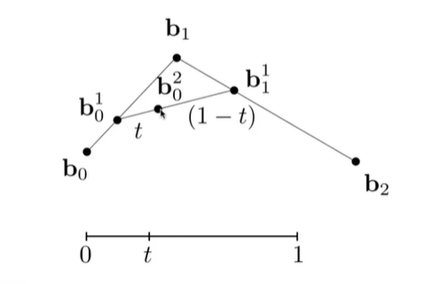
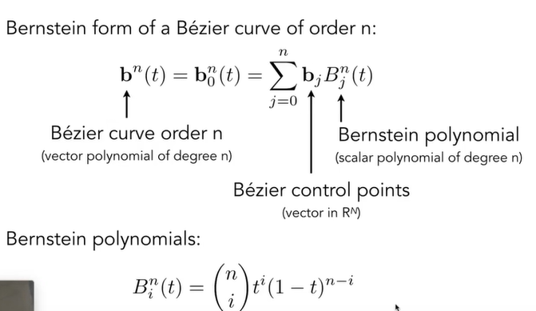
逐段贝塞尔曲线
piecewise Bezier Curves，每四个点形成一段贝塞尔曲线
- C0连续：上一段终点等于下一段起点
- C1连续：切线方向相反，大小相等
样条
splines，可控的曲线（给一定固定点，局部改变）
B-splines
局部性，可只改变局部曲线
NURBS
非均匀有理B样条
贝塞尔曲面
Bezier surface，水平一次Bezier Curves，把每个曲线的点当成控制点再做一次Bezier Curves
几何处理
曲面细分
Loop Subdivision
- 增加三角形
- 调整顶点位置
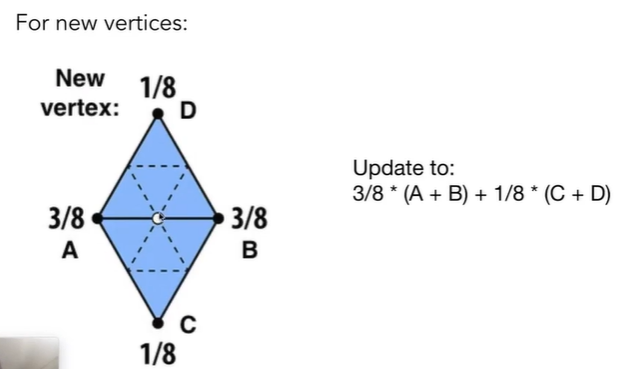
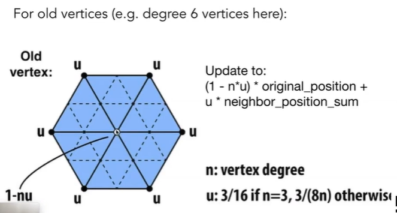
Catmull-Clark Subdivision(General Mesh)
奇异点（extraordinary vertices）：度不为4的点
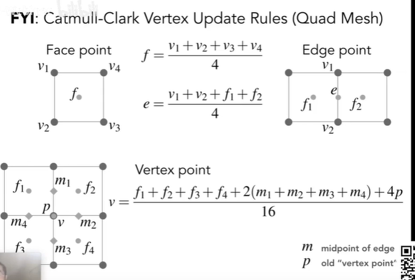
曲面简化
边坍缩
Edge Collapsing，删除一些边，把两个顶点合成一个顶点
- Quadric Error Metrics（二次误差度量）：新顶点找到最优位置，此点到原本面的距离的平方和最小。
- 堆或优先队列存储
变换（Transformation）
Model、View、Projection Transformation
线性变换
绕原点旋转，R-θ = RT = R-1
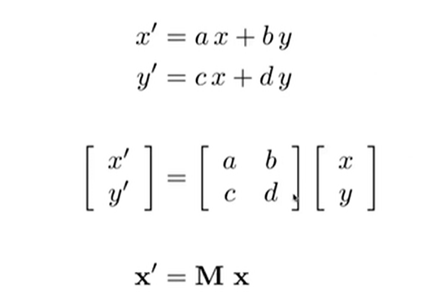
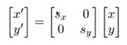
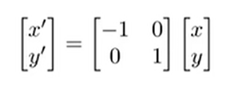
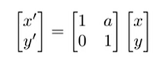
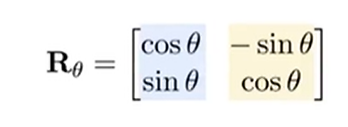
仿射变换
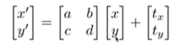
齐次坐标
- vector + vector = vector
- point + vector = point
- point - point = vector
- point + point = 中点
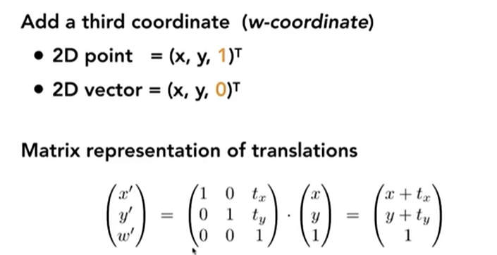
逆变换
MA的逆变换 = M-1MA
3D变换
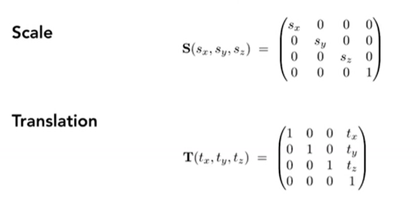
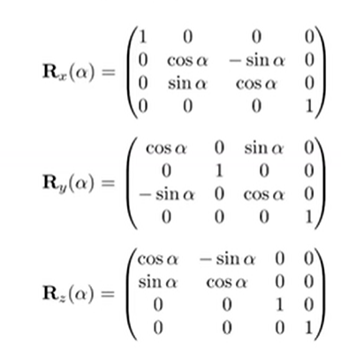
罗德里格斯旋转公式
Rodrigues，向量分解
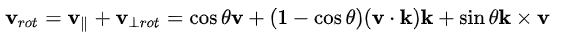
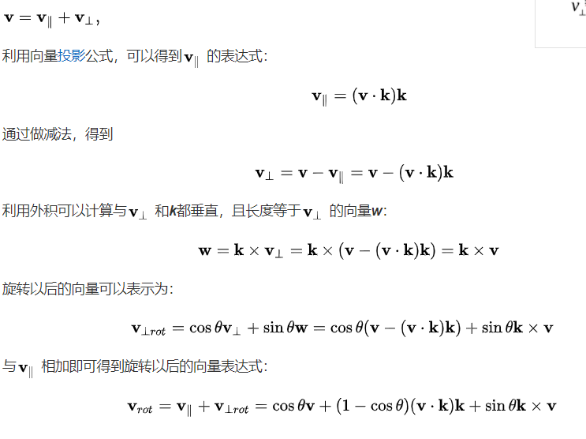
视图变换
相机定义
利用相对运动，对物体进行变换
- Position e to origin
- Look-at/gaze direction g to -Z
- Up direction t to Y
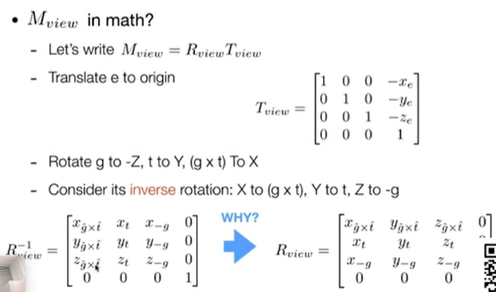
视图定义
- Aspect ratio = width / height 宽高比
- Vertical Field of View（fovY） 视锥
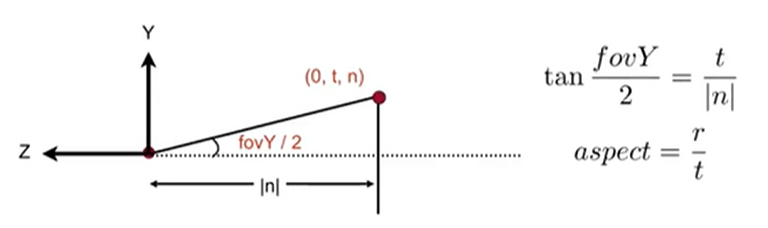
投影变换
正交投影（orthographic）
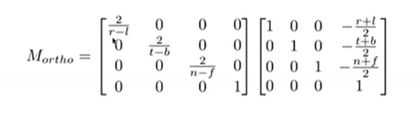
透视投影（perspective）
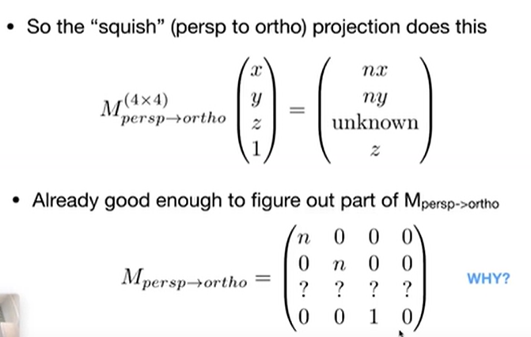
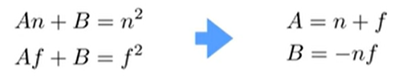
光栅化（Rasterization）
MVP变换后在屏幕（像素（RGB改变颜色）数组）上显示的过程，将物体坐标变换到窗口坐标的过程。
视口变换
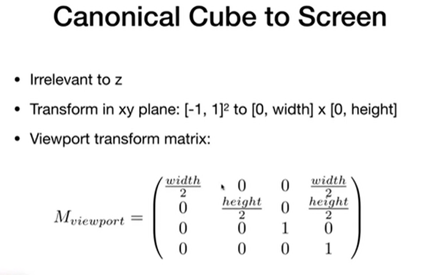
三角形
- 最基本的多边形，任何多边形都可以转换成三角形
- 确定一个平面，内外定义清晰
- 插值，确定顶点可以做内部的渐变
采样（sampling）
把连续信号转换成离散信号的过程
包围盒
用体积稍大且特性简单的几何体（称为包围盒）来近似地代替复杂的几何对象。
- AABB包围盒：包含该对象，且边平行于坐标轴的最小六面体。紧密性较差，相交测试简单。
- 包围球：包含该对象的最小球体。紧密性较差，相交测试简单，同时当对象发生旋转运动时，包围球不需做任何更新。
- OBB包围盒：包含该对象且相对于坐标轴方向任意的最小的长方体。紧密性较好，可以大大减少参与相交测试的包围盒的数目，因此总体性能要优于AABB和包围球，但是不能用于软体对象的碰撞检测。
- FDH（k-DOP）：包含该对象且它的所有面的法向量都取自一个固定的方向集合的凸包。紧密性是最好的，同时其相交测试算法比OBB要简单的多。可以用于软体对象的碰撞检测。
走样（Aliasing）
用同样的方法采样不同频率的信号却无法区分开，采样过程中发生了频谱信号的混叠。
- 锯齿（jaggies）
- 摩尔纹
- 车轮效应
反走样
Pre-Filter
时域上卷积等于频域上乘积。对每一个像素求三角形覆盖面积的比值对相应颜色做平均
傅里叶级数展开
任何周期函数可以转换正弦和余弦函数的和，引出傅里叶变换（时域变换成频域），图像的频率是表征图像中灰度变化剧烈程度的指标，是灰度在平面空间上的梯度。
滤波
去掉一些频率，等于Convolution
MSAA（Antiliasing By Supersampling）
将一个像素划分成更多的部分，根据三角形占据了多少部分确定颜色。增加采样点
FXAA（Fast Approximate AA）
匹配边界，把边界换掉
TAA（Temporal AA）
复用上一帧的信息
Super resolution（超分辨率）
图片拉大，DLSS（Deep learning Super resolution）
深度缓存
Z-buffering，对每一个像素都存一个深度
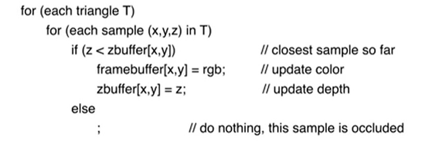
着色（Shading）
决定屏幕上像素的最终颜色，进行光照计算以及阴影处理。
着色频率
着色应用在多大的对象上
- Flat Shading 对一个个平面进行着色
- Gouraud Shading 对每一个顶点进行着色，三角形内部进行插值（重心坐标），如何求顶点的法线（相邻三角形的法线求平均，还可以根据面积大小确定权值）
- Phong Shading 对每一个像素进行着色
Specular highlights（高光） + Diffuse reflection（漫反射） + Ambient lighting（环境光）
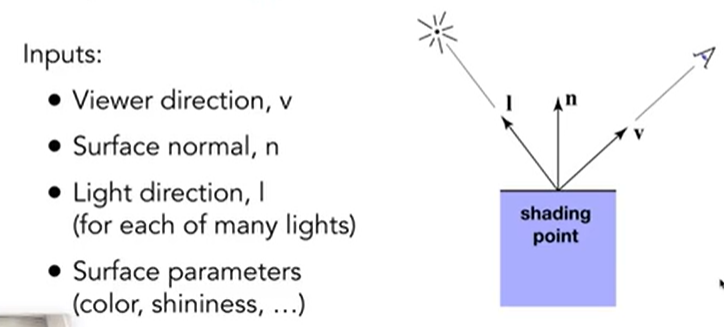
Blinn-Phong Reflectance Model
- 漫反射:光线与平面夹角不同，对应面积光通量不同。I / r2
- 高光：视线方向和镜面方向接近 = 法向量和（视线方向、光线方向）的半程向量（（V + l）/ ||V + l||）方向接近
- 环境光：假设所有点的环境光相等为一个常数
- Kd表示对光的反射率或吸收率，表示为RGB值时就能表示颜色、指数p控制高光的大小
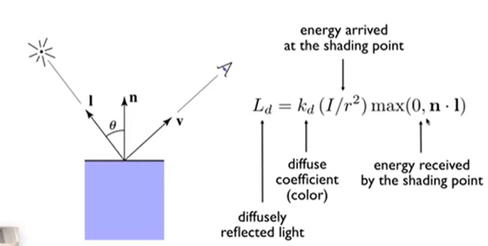
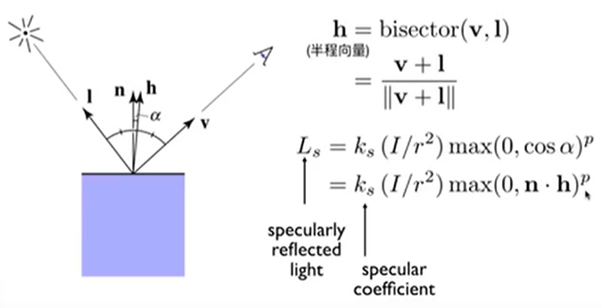
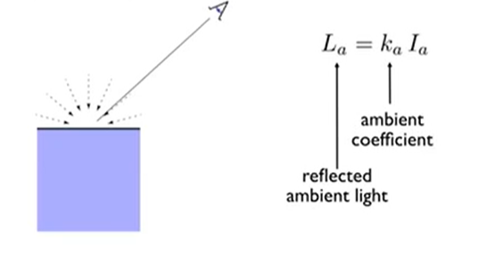
纹理（texture）
一张图，纹理映射就是把图贴到物体上
纹理坐标系
（u，v），三角形每一个顶点对应一个（u，v）
插值（Interpolation）
三角形内部得到一个平滑的过渡
Barycentric Coordinates（重心坐标）
三角形每一个点都有一个重心坐标（x, y） = αA + βB + γC，α + β + γ = 1，α >= 0 + β >= 0 + γ >= 0，则(x, y)的属性 = αA + βB + γC。在三维空间做插值再投影到二维空间去。
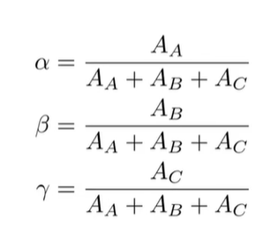
纹理放大
Texture Magnification，多个像素查找到同一个纹理像素（纹理太小了）。
- Nearest
- Bilinear interpolation 双线性插值：当像素映射的不是整数时，找周围四个点进行插值。
- Bicubic 取周围16个点，双立方插值。
纹理缩小
Mipmap,允许范围查询（近似的、方形的）。Trilinear Interpolation，三线性插值求像素到上、右点的距离近似求出其占据纹理的区域，然后查询mipmap第几层找区域，层与层之间进行插值。
Anisotropic Filtering 各项异性过滤，即压缩时增加了x或y方向上的压缩，可以解决长方形的纹理覆盖问题。
EWA Filtering，将区域拆成各种圆形
环境光
用纹理表示环境光
Spherical Map，把环境光记录在球上，把环境光记录在立方体上
凹凸贴图
定义每一个点的相对高度
位移贴图
实际改变三角形位置
Shadow Mapping
点光源
点在阴影里即不能被光源“看到”
- 记录光源各个方向看到的点的深度
- 从摄像机看到的点向光源计算深度，对比map的深度
软阴影即只能看到部分光源的阴影
光线追踪
Ray Tracing，光栅化不好做全局的阴影和透明、反射材质，间接光照。
- 光线沿直线传播
- 光线之间不会发生碰撞
- 光线是从光源出发到达“眼睛”
- 假设从“眼睛”发出“感知的光线”，把所有光路光源可见的点的着色值都加到此像素
Whitted-Style Ray Tracing
把所有光路光源可见的点的着色值都加到此像素
求交点
求交点，联立方程，如果是三角形物体（一个一个三角形求交，求t最小的值）
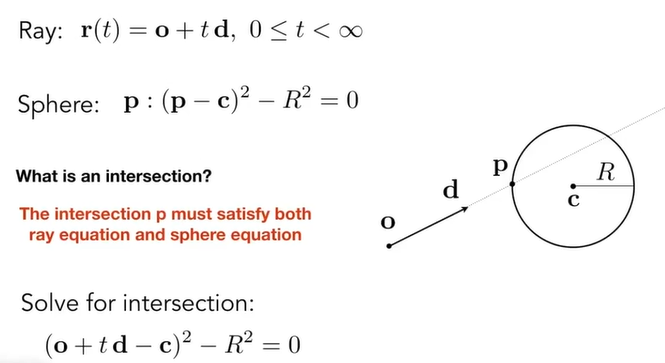
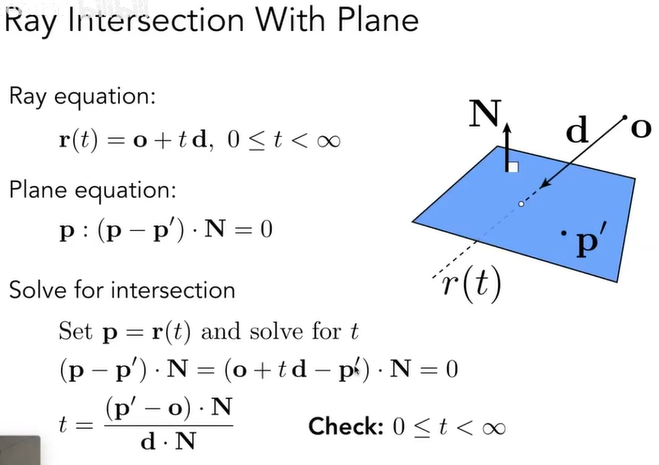
三角形求交，转换成平面求交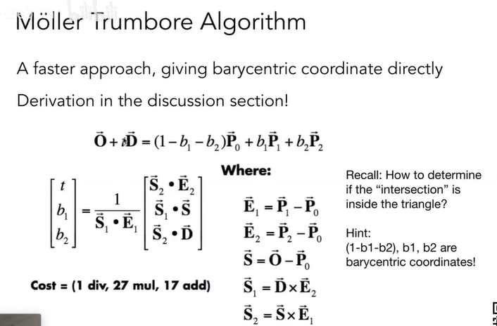
MT算法Bounding Volumes
光线与包围盒求交
- Axis-Aligned Bounding Box（AABB），轴对齐包围盒。三组对面各计算一个tmin和tmax，保留tmin的max和tmax的min。tenter < texit才可能有交点，texit < 0（盒子在光线后），tenter < 0（光线在盒子里）
- 空间划分：把空间划分成一个个格子
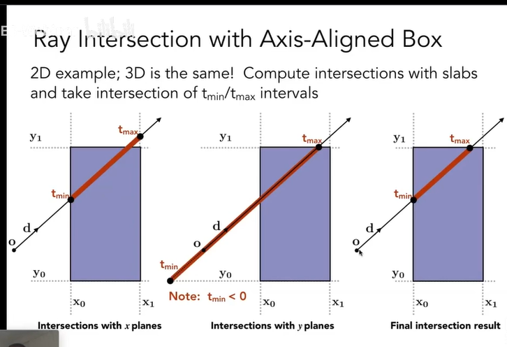
空间划分
- 八叉树，x、y、z方向上二分，当格子内物体足够少时停止，但是自由度低，根据维度n为2n树
- KD-tree，x、y、z方向上划分，划分和维度无关，每次只划分一个轴方向。逐步对节点判定。
- BSP-tree，不是横平竖直的划分
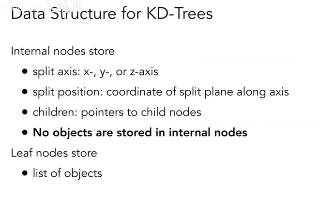
BVH（Bounding Volume Hierarchy）
根据物体划分空间，把物体分成几个部分。
- 找中间的三角形
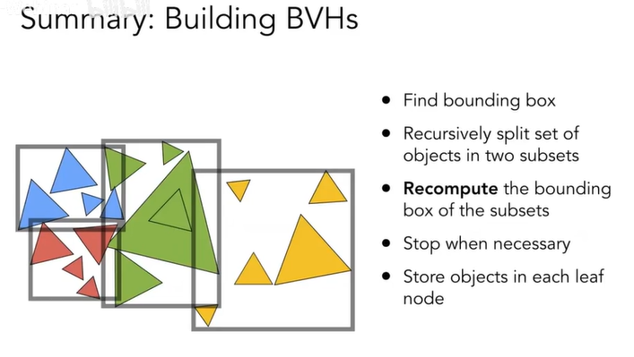
求反射率
辐射度量学Basic radiometry，如何描述光照
- Radiant flux，单位时间光的能量，流明lm，辐射通量
- intensity，单位立体角的辐射通量，lm / 立体角，球体 = lm / 4Π，立体角 = 面积 / r2
- irradiance，单位面积接受的能量，lm / 面积，lux
- radiance，单位立体角单位面积的能量，对应irradiance只有一个方向
BRDF
Bidirectional Reflectance Distribution Function，双向反射分布函数，定义某一个方向进入的能量如何分配到四面八方去
渲染方程
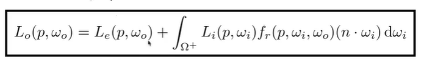
路径追踪
采用渲染方程做采样，所有路径做平均
whitted-style ray tracing
- 光打在光滑物体，折射或反射
- 漫反射停止
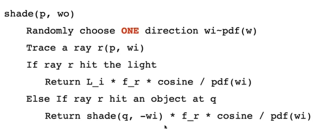
俄罗斯轮盘赌（Russian Roulette）
解决光线弹射次数
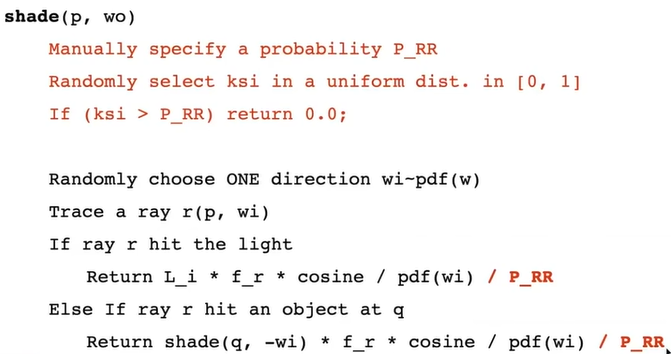
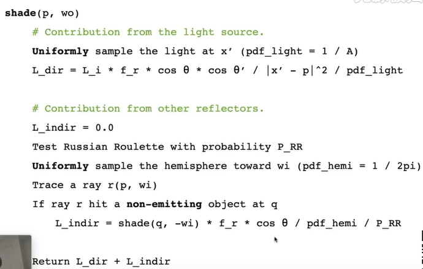
材质和外观
Material == BRDF
反射、折射、全反射
菲涅尔项：反射的能量和入射角度有关
参考资料
- GAMES101.闫令琪